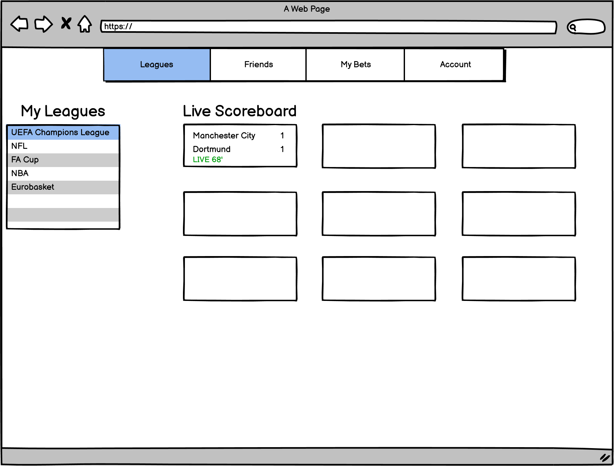
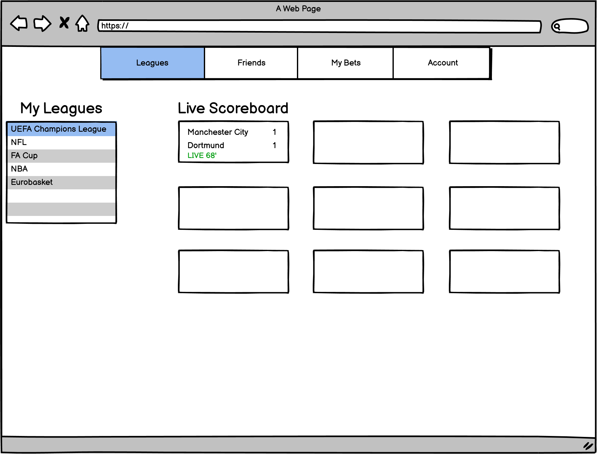

Iterative Design Project
This project was done as a part of CSCI1300 at Brown University.
In this project we were tasked with designing an interactive interface for an emerging startup.
Why We Chose Novig?
We chose Novig because of our groups collective passion for sports. Novig provides a good combination of tech and sports through the use of a sports betting platform.
What is Novig?
YCombinator Novig description:
"Novig is a commission-free sports betting exchange that guarantees bettors the best lines and eliminates the need for traditional sportsbooks.
We do this by enabling users to bet directly against friends or the market, rather than against the house, making the betting experience more efficient,
fair, and, most importantly, profitable. We built a two-sided marketplace that eliminates the middle man, becoming the NASDAQ of betting."
Pre-Design Thinking
We thought about several ideas as to how we wanted to implement the website
before we began to work on initial sketches, and below is a list of what we
were able to come up with:
- We would primarily like to focus on a website
- The types of users that would be impacted by this interface would be sports fans
- More specifically users who are 18+ and live in a sports betting legal state
- These users would be impacted an element to the viewing experience of a sporting event. Also, this platform takes
away the element of a house and uses stock market esque concepts to make money.
Sketches
Taking some of the pre-design thoughts into our heads, we drafted some
rough sketches, which can be seen below:
Final Lo-Fi Wireframes
After sketching, we took the best design elements and streamlined them into
wireframes on Balsalmiq to give us a good base for hi-fi prototypes.
Interactive Hi-Fi Mockup With Critique Feedback
Prototype Link
Critique Feedback
We had classmates play with our intial hi-fi prototypes, and implemented
the below critiques into the main project.
- Live scores - -150 and +150 is really small, can’t tell so use colors or font
- Could be more on the homepage, see where their bets are and status instead of just scores
- Organize active bets are numbered or bulleted list for friends list. Acting more like links or buttons
- Feed tab – recent bets being made live
- Friends is unclear – need an add friends
The next step in the project was to give a task to random users to test the
usability and effectivness of the prototypes, using UserTesting.com
to get feedback. We created a task that would utilise much of the functionality of
what we wanted our prototype to do.
Task Description

Analysis
Following is some analysis based on the user testing videos that we recieved.
Recorded Observations
-
Inital impressions conveyed a lack of trust for the website,
citing the lack of images and the simplistic design for there being something
"missing" from the website.
-
Lack of much variety in colors as well as lack of images and icons also threw users off
on the overall design, were expecting something more flashy for what was supposed to be a
betting website.
-
Users found the home page to be a little bit unintuitive; they didn't know what the feed was
supposed to show or why the Novig logo navigates to the home page without much information
about the page.
-
The website was easy to navigate, most tasks were easily completed even to those without much betting
experience.
-
The biggest issue was the lack of clarity in making a bet - clicking a score or a game doesn't make the
user believe they can make a bet from it, until they experiment and click on it.
Commentary
The User Testing results confirmed some of our predictions and surprised us in others. The task was
meant to test much of the functionality of the prototype we had implemented by having users check on
their bets and their leagues and then choosing to make a new bet - the two main functionalities.
We feel that we met the bar in viewing current bets and implementing the friend interfaces, as users
found these functions very clear. Our choices for tabs on the navigation bar were clear and easy to
guess what would be on each. However, we fell short in the betting functionality - the lack of clear
buttons and markings to make bets across all pages caused confusion as there were no affordances for
placing a bet.
User Testing Links to Videos
User 1
User 2
User 3
Overall, there was a lot to take away from this project, and we as a group learned a lot about
the feedback process and the dedication needed to create a completely user-friendly website that
functions as it needs to while pleasing to the eye. Given more time and more knowledge of the sports
betting industry, the user testing feedback could've been heavily relied on to make a very robust
website for Novig.


 
